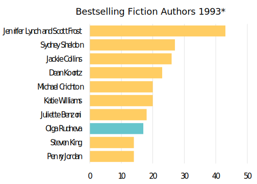
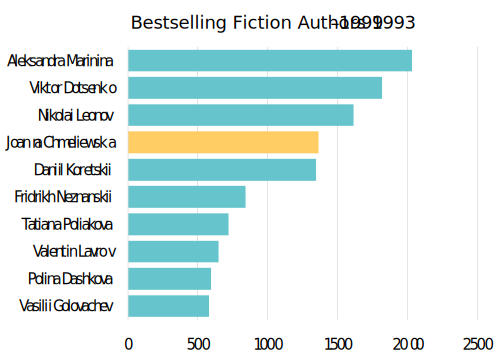
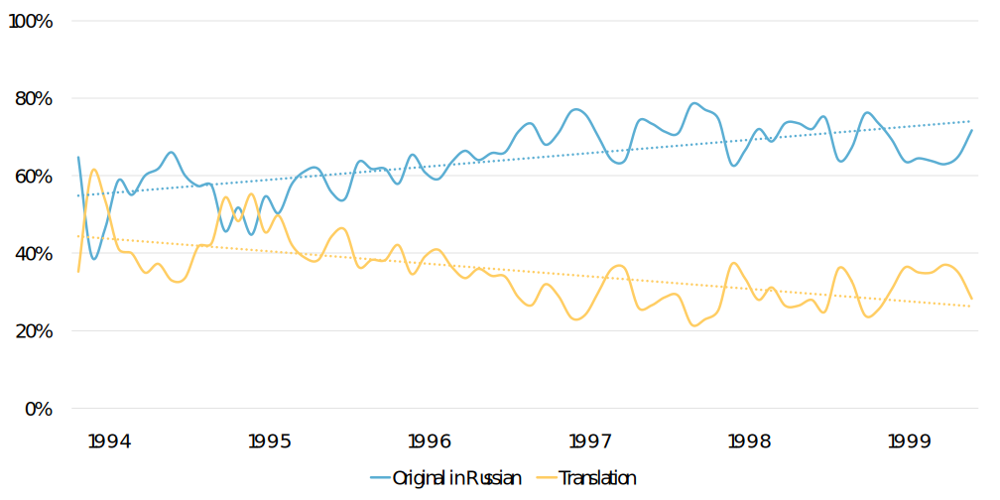
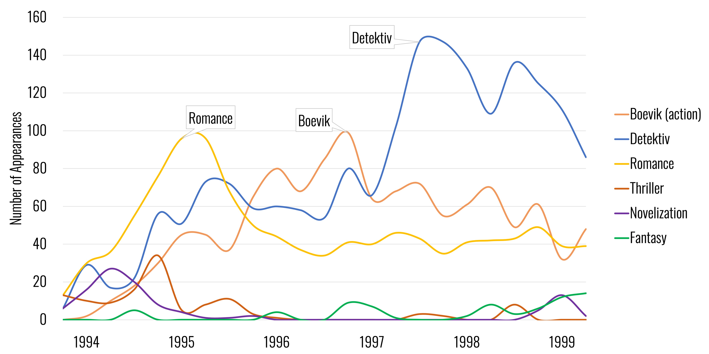
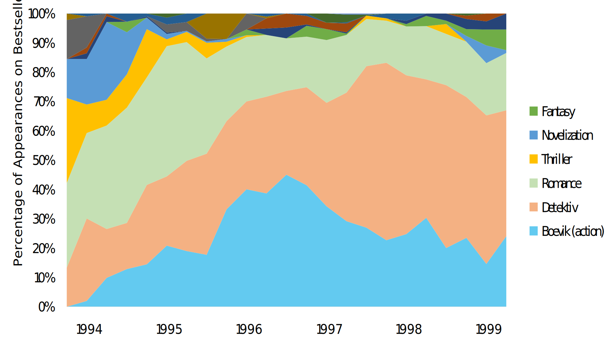
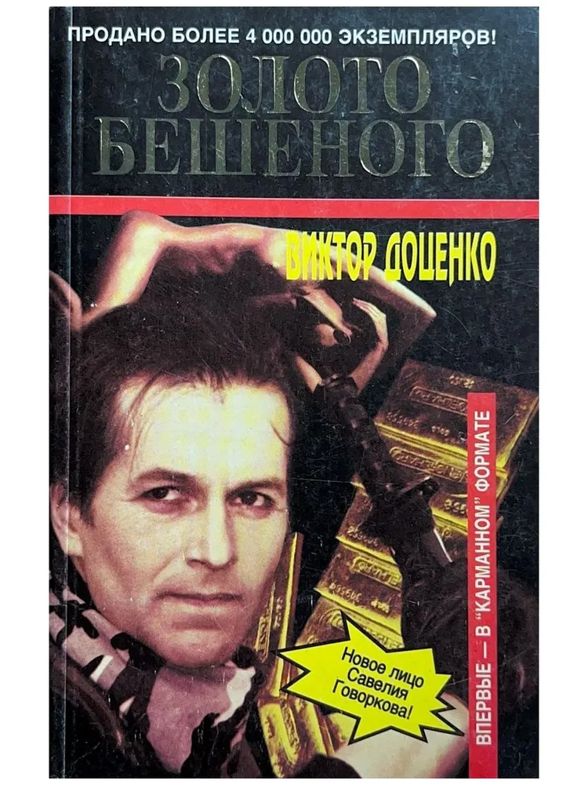
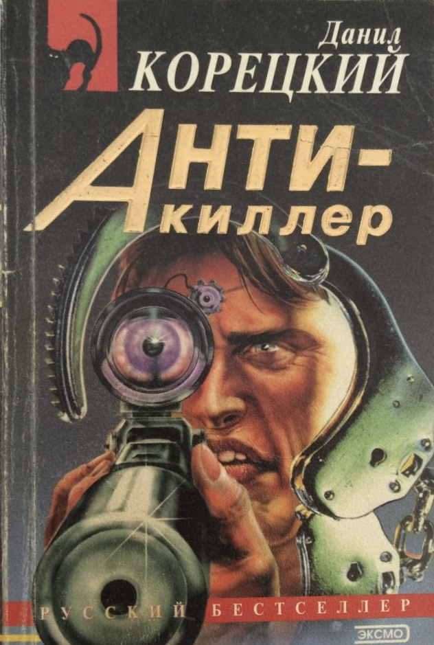
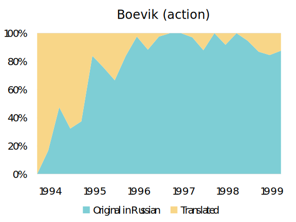
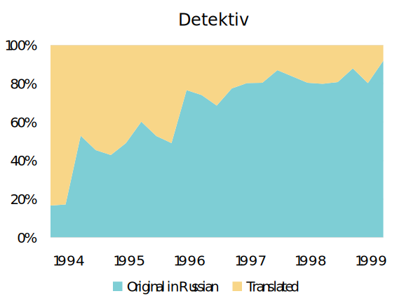
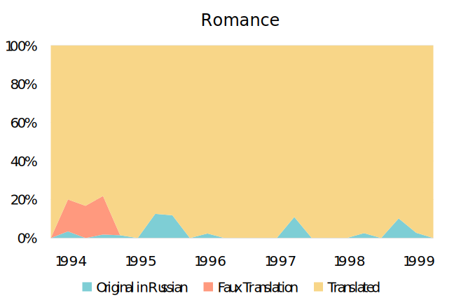

(This is Part II in a series, check out Part I and Part III)
The first post in this series discussed
one of the clearest tendencies that emerges from Russia’s first bestseller lists, the
movement from translated to homegrown Russian bestsellers. The top ten bestsellers over
the first year of the lists’ existence, for instance, include only one Russian, while
that proportion has entirely flipped by the end of the lists in 1999:


The top ten bestselling authors in 1993 (left) and over the
life of the lists, 1993–1999 (right). Authors writing in Russian are indicated in blue;
translated authors are in yellow.
A more granular look at the data—at the level of titles instead of authors—shows a slightly
less stark, but no less clear trajectory. At the beginning of the lists, translated titles
vie with homegrown offerings for primacy, but as the lists continue, Russian titles clearly
win out, claiming around 70% of the bestselling spots over the lists’ last years.

The proportion of bestsellers appearing on the Knizhnoe obozrenie
fiction lists 1993–1999 that were written in Russian (blue line) vs. translated (yellow line).
Russian authors’ increasing share of bestseller real-estate can be attributed to a number of
genre innovations, alongside shifting genre preferences among the reading public. The first
genre to dominate the lists was romance, but it was soon overtaken by darker genres, first the
action thriller known as the boevik, and then by the murder mystery known as the detektiv.

The popularity of various genres according to appearances on the
Knizhnoe obozrenie fiction bestseller lists 1993–1999.
Visualizing this same data slightly differently, we can see the relative market share that each
of these genres represented throughout the decade. At its peak in early 1998, the detektiv
accounted for nearly 60% of all bestsellers.

The market share of various genres by percentage of appearances on the
Knizhnoe obozrenie fiction bestseller lists 1993–1999.
These two later genres are both innovations that grew out of the Russian book market. The
boevik offered testosterone-soaked dreams of vigilante justice that answered the
chaos of the post-Soviet world with the moral and physical strength of the extraordinary
individual. This genre brought authors like Daniil Koretskii and Viktor Dotsenko to the top
of the lists in 1995. It was the first Russian innovation on Western imports, recasting
hyper-masculine elements of Rambo against a post-Soviet backdrop of social decay, and leading
to some of the worst cover art of the decade.


Covers of Viktor Dotsenko's Mad Dog's Gold (left)
and Daniil Koretskii's Anti-Killer (right).
By 1996, another genre arrived that would dominate the rest of the decade: the
zhenskii detektiv. These detective novels whose author, protagonist, and intended
audience were all women answered the success of the action thriller by bucking retrograde
gender norms to show women outsmarting (and not just out-muscling) the mire of chaos capitalism.
They seemed to combine the appeal of both romance and boevik genres to create a
female-centric narrative structure that could plausibly take place in post-Soviet reality.
It was largely thanks to these genres (or more precisely, these genre innovations) that Russian
authors overtook their international colleagues on the Knizhnoe obozrenie bestseller
lists. If the beginning of the decade saw romance dominate the list, soon the action thriller
(or boevik) takes over, and then the detektiv.
Part of this market success can be explained by the innovations local authors were able to infuse
into the genre as it was imported. If we disaggregate the market share data by genre, we can see that
over the decade, Russophone authors came to dominate the boevik and the detektiv.


Proportion of titles appearing on the Knizhnoe obozrenie fiction
bestseller lists that were written in Russian (blue) vs. translated (yellow) disaggregated by genre,
with boevik, or action thrillers, on the left, and detektiv on the right.
But the romance, the most popular genre at the beginning of the decade, was never successfully adapted
by Russophone authors. It remained an imported genre, set in exotic locations, and unable to speak to
post-Soviet reality. And it fell off bestseller lists by decade’s end.

Proportion of romance titles appearing on the Knizhnoe obozrenie fiction
bestseller lists that were written in Russian (blue) vs. translated (yellow).
By the end of the decade only one foreigner remained on the bestseller list, and it wasn’t a huge
international name such as Stephen King or Danielle Steel (both of whom had enjoyed early 1990s
popularity), but a Polish writer who has never been translated into English named Joanna Chmielewska.
Her bestselling works had more in common with the post-Soviet zhenskii detektiv than with
any of the Western genres imported at the beginning of the decade. Works that somehow spoke to
postsocialist realities, it seems, had the best chance of making the list in post-Soviet Russia.
What we see, then, over the course of this decade is perhaps not what you would expect. It is not the
increasing integration of Western and Russian markets of culture, moving towards convergence in something
like world literary culture. Instead, it is an initial fascination with imported culture followed by a gradual
divergence, a process of imitation, adoption, and innovation that actually makes Western pulp fiction
into something different. The reason for this is at least in part because post-Soviet Russia was not
like the West. Despite the market economy and putative democracy (or perhaps because of the patent
failures of these western imports) Russia was not the “normal country” that so many had hoped for,
but something different. And that difference was reflected in its transformations of genre forms.